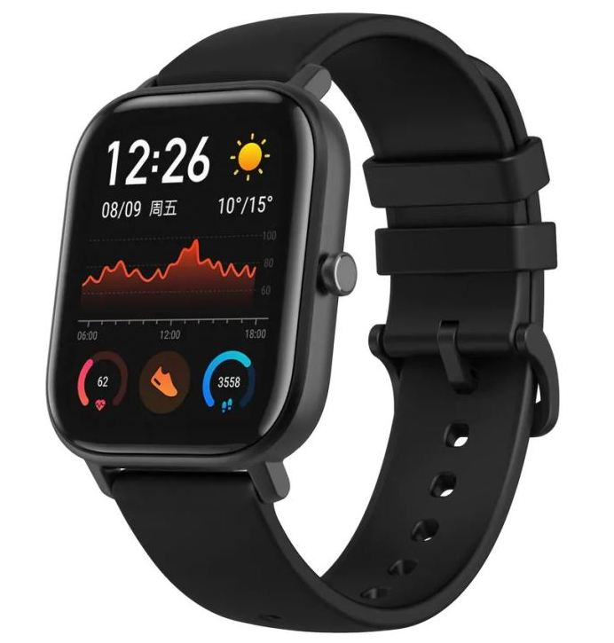
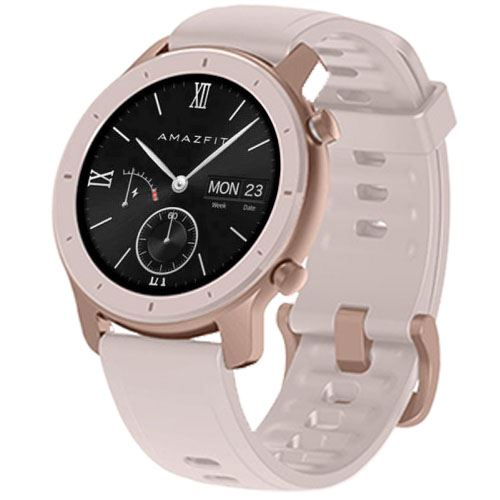
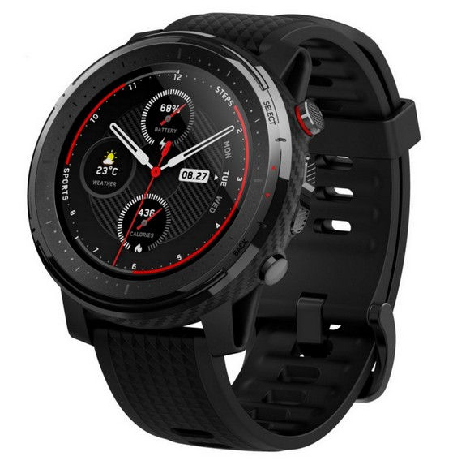
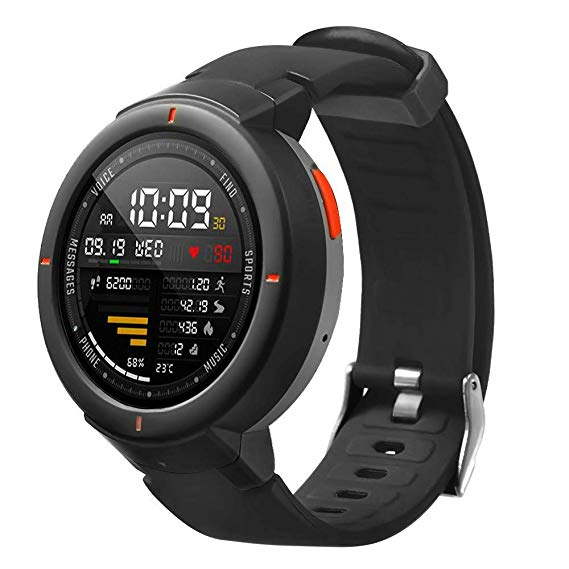

Melyik Amazfit okosórát válasszam?
A Xiaomi / Huami az utóbbi időben turbó fokozatra kapcsolva ontja magából
az okosórákat és aki nem követi annyira az eseményeket, könnyen elveszthet a
kütyük tengerében. Ezért nézzük át, hogy a mostanság aktuális okosórák mit
tudnak, mik az előnyeik, esetleg hátrányaik és milyen az üzemidejük,
mennyi idő telik el két feltöltés között (ami függ a használattól is).
GTS

Stílusos szögletes kijelző, amely több tartalmat mutat
A teljesen egyedi, 1.65”-os szögletes kijelző nagyobb megjelenítő felületet biztosít. 2 egyedi, innovatív moduláris számlapot is kapott, amelyek cserélhetők és testre szabhatók.
Színes és vékony fémtest, 6 attraktív szín
A 2.5D csiszolt üveg és a fém ház átmenete szinte észrevétlen, és lecsökkenti a vastagságot mindössze 9.4 mm-re.
5 ATM vízállóság és professzionális úszás-követés
A GTS vízálló 50 méterig, és különböző úszásnemeket támogat. Az óra képes automatikusan felismerni az úszáspozíciónkat, és rögzíti az adatokat.
12 népszerű sport mód
12 sport módot képes kezelni, pontosan követve a gyakorlatokat és a tevékenységeket. Több professzionális szenzor segítségével a fizikai adatokat teljesen monitorozni tudja, hogy még jobban elősegítse a sikeres edzésedet.
GTR 42

Kifinomult és elegáns, klasszikus hátlappal
Az óratest minőségi anyagokból készült, így könnyű, kifinomult és elegáns, közben mégis ellenálló.
24 napos üzemidő
A továbbfejlesztett, kedvező fogyasztású chipnek, az új áramkörnek és az energiafelhasználás optimalizációjának köszönhetően akár három héten keresztül is gond nélkül használni lehet egy feltöltéssel.
5 ATM vízállóság és precíz GPS kapcsolat
Akár 50 méterig vízálló. A nagy precizitású GPS arra lett tervezve, hogy mindig pontos adatokat nyújtson a kültéri tevékenységek végzése közben.
Számold a lépéseidet, aludj jobban, játszd le a zenét
Folyamatosan méri a lépteid számát és figyeli a edzéseket. Amikor elalszol, részletes adatokat gyűjt az alvásodról, a telefonod elővétele nélkül vezérelheted a zenelejátszót.
Stratos

Külső
A 2.5D kerekített szélű, kapacitív LCD érintőkijelző napfényben is tökéletesen olvasható háttérvilágítás nélkül is. A kijelzőt körbefogó keret kerámiából, az óratok 316L rozsdamentes acélból készült szénszállal kombinálva.
Értesítések
Az okosóra értesít bármely bejövő hívásról, SMS-ről vagy e-mailről. Az értesítésekhez rezgés is beállítható.
Sportolás
Az óra 14 féle sporttevékenységet képes nyomon követni és rögzíteni.
Alvásfigyelés, mozgásfigyelés
A beépített optikai pulzusmérőnek és a mozgásérzékelőnek köszönhetően az óra éjszaka képes elemezni az alvást és megkülönböztetni a mély alvást a felszínes alvástól. Napközben beállítható a mozgásfigyelés, az okosóra jelez, ha sokáig vagyunk egyhelyben.
Verge

AMOLED képernyő
Kék 1,3“ AMOLED kijelzővel rendelkezik, amely tiszta képeket és élethű óramutatókat jelenít meg.
Hívást indít?
Az órát híváskezdeményezéshez vagy hívásfogadáshoz is használhatod. Ha bejövő hívás érkezik, az óra rezeg és hangjelzést ad.
Üzenetek fogadása
El akarod olvasni az üzeneteket, de nem érzed helyénvalónak, hogy így tegyél? Elolvashasd az üzeneteket az 1.3″-os képernyőn anélkül, hogy elővennéd a mobiltelefonod.
Optikai szenzor
Nagy pontosságú optikai érzékelőt és új algoritmusokat használ a pontosabb monitorozáshoz és az alacsony fogyasztás érdekében.